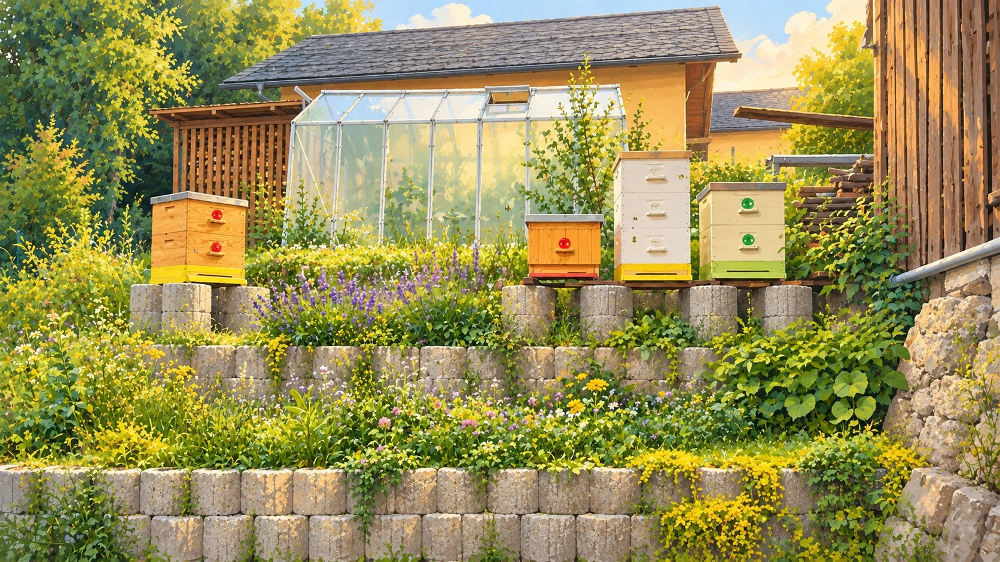

Moje malá včelnice
Každé včelstvo má svůj příběh. Vše důležité přehledně a na jednom místě.
Naše úly
Rychlé záznamy
Naše hospodaření
Počítáme výdaje a prodaný med.
Poslední události
Moje včelstva
U domu a v Lučanech • 4 úly
Co je u včel nového?
Stačí několik klepnutí a je hotovo.
Historie zápisů
Bez hledání v mnoha záložkách.
Náklady podle úlu
Společné výdaje (například medomet nebo sklenice) se počítají do celkových nákladů, ale nepřidělují se uměle konkrétním úlům.
Nový výdaj
Prodaný med
Výdaje
Prodeje medu
Zálohy jsou nyní v samostatné záložce.
Zálohy a obnovení
Stáhni si kopii finanční evidence nebo nahraj starší zálohu.
Obnovit ze zálohy
Vyber soubor .json ze starého deníku 4.8.x nebo zálohu financí z verzí 5.2/5.3.
Co se obnoví: výdaje a prodaný med. Úly, kontroly, léčení a další záznamy ze starého deníku zatím tato testovací verze nepřenáší. Původní JSON si proto ponech.
Po výběru souboru se zobrazí potvrzení před změnou dat.
Stáhnout zálohu
Stáhni aktuální výdaje a prodeje medu do souboru JSON. Později je můžeš znovu obnovit.
Tento export obsahuje finance aktuální verze, nikoli kompletní původní včelařský deník.
Údaje se zatím ukládají místně. Pokud otevřeš aplikaci na jiné adrese, zařízení nebo promažeš data prohlížeče, nemusí se objevit. Proto si soubor JSON uchovej mimo zařízení.
Úl č. 1
Stanoviště u domu
Rychlý přehled
Náklady evidované přímo na tomto úlu: 0 Kč
Matka, zásoby, síla včelstva a poslední kontrola. Jen to důležité, podrobnosti jsou až po rozkliknutí.